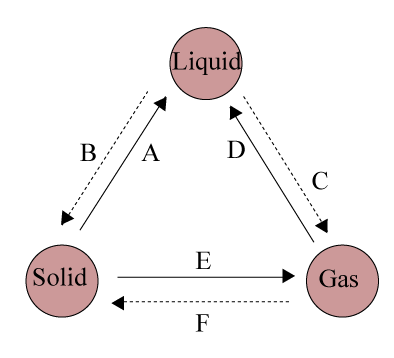

| |
Common misconception |
Fact |
| 1 |
Molecules are basic, simple, indivisible entities |
Molecules are made of smaller entities (atoms) which reorganize into different molecules.Therefore molecules are divisible. |
| 2 |
Molecules of solids are hard, biggest, weigh more than molecules of gases. |
Molecules shape, size and mass do not change between solid and gas phases. Just because the phase as a whole appears different, e.g. often the gas is less visible than when in the solid form, doesn't mean that the molecules themselves have changed, only the forces between them. Changes of state are physical changes. |
| 3 |
Molecules expand when heated. |
Molecules themselves do not expand. The substance heated may appear to expand because heat causes molecules to move faster (and further apart). |
Introduction
Everything that we see around us is matter. A book, a table, a chair you are sitting on, the food we eat, the water we drink, the air we breathe, the earth, the sun, the moon, the stars and everything else.
Matter is anything that has mass and occupies space. Chemistry is a branch of science which deals with the study of matter. But all the matter we observe have different shapes, colours etc. The difference in these properties which is explained on the basis of kinetic molecular theory of matter.
States of Matter
Matter exists mainly in three physical states - solid, liquid and gas.
Kinetic Molecular Theory of Matter
The theory, which visualizes that any substance, whether solid, liquid or gas, is made up of atoms, molecules or ions in constant motion, is called the Kinetic Molecular Theory of matter.
Postulates of the kinetic molecular theory
Composition of matter
Matter is composed of small particles, which may be atoms, ions or molecules. The constituent particles of a given substance are identical in all respects.
Arrangement of particles
These particles have spaces lying between them, and these spaces are referred to as intermolecular spaces.
Force of attraction
The force of attraction between the molecules of a given substance is called intermolecular force. The magnitude of this force depends upon the state of the substance and on the magnitude of the intermolecular spaces.
Motion
The molecules are always in a state of motion. In solids, they vibrate about their mean positions, and in liquids and gases, they move randomly. Due to their motion, molecules possess kinetic energy.
Temperature
On heating, the kinetic energy of the molecules increases, and they move faster. Based on the kinetic molecular theory, description of the arrangement and movement of the particles in the three states of matter can be summarised in table below.
| Properties |
Solid |
Liquid |
Gas |
| Arrangement of particles |
\( \bullet \) orderly
\( \bullet \) closely packed |
\( \bullet \) disorderly
\( \bullet \) loosely packed |
\( \bullet \) random
\( \bullet \) very far apart |
| Attractive forces between particles |
\( \bullet \) very strong |
\( \bullet \) strong |
\( \bullet \) very weak |
| Particle motion |
\( \bullet \) vibrate about a fixed point |
\( \bullet \) roll and slide past each other |
\( \bullet \) move about at great speeds
\( \bullet \) random motion |
| Energy content |
\( \bullet \) low |
\( \bullet \) moderat |
\( \bullet \) high |
Properties of solids, liquids and gases
Table below shows the properties of the three states of matter.
| Property |
Solids |
Liquids |
Gases |
| Mass |
Have a definite mass |
Have a definite mass |
Have a definite mass |
| Volume |
Have a definite volume |
Have a definite volume |
Does not have a definite volume |
| Shape |
Have a definite shape |
Takes the shape of the container |
Does not have a definite shape |
| Rigidity |
Highly rigid. This is due to vibration of particles only about their mean position. |
Less rigid. This is due to free movement of particles in the liquid. |
Not rigid the particles are free to move in any direction. Hence, gases have no rigidity. Least dense |
| Density |
The intermolecular spaces are less in case of solids. Have greater density. |
The intermolecular spaces in liquids are more, than in solids. |
The intermolecular spaces are maximum in gases. Have least density. |
| Free surface |
Any number of free surfaces, due to definite shape. |
Only one upper free surface. Hence, liquids take the shape of the container. |
No free surfaces. Hence, gases have no fixed shape. |
| Miscibility (or) Diffusion |
No diffusion |
Slightly diffusible |
Highly diffusible |
Interconversion between states of matter
Matter can change its state. Change in states of matter are reversible. This change can be brought about by:
By applying a high pressure a gas can be changed into a liquid. By changing temperature a change in state can be brought about. Figure below shows the interconversion between the three states of matter caused by absorption or evolution of heat energy.
Melting
Melting is the process whereby a solid changes into a liquid. Heat is absorbed during melting. Melting takes place at a fixed temperature called the melting point. Melting point is the fixed temperature at a certain pressure where by a solid changes into a liquid. A pure substance has a fixed melting point. Impurities lower the melting point of a substance. Increasing pressure lowers the melting point of ice but increases the melting point of other substances.
Boiling
Boiling is the process whereby a liquid changes into a gas. This change in state occurs inside the liquid. Heat is absorbed during boiling. Boiling takes place at a fixed temperature called the boiling point. The boiling point is the fixed temperature at a certain pressure whereby a liquid changes into a gas. A pure liquid has a fixed boiling point. Impurities elevate the boiling point of a substance. Increasing pressure increases the boiling point of a substance.
Evaporation
Evaporation is the process whereby a liquid changes into a gas. This change in state takes place at the surface of the liquid. Heat is absorbed during evaporation. Evaporation takes place at all temperatures below the boiling point of the liquid, i.e., when the substance is still in the liquid state
Condensation
Condensation is the process whereby a gas changes into a liquid. This change in state takes place when a gas is cooled to its boiling point. Heat is evolved during condensation.Condensation takes place at a fixed temperature numerically equal to its boiling point.
Freezing
Freezing is the process whereby a liquid changes into a solid. Heat is evolved during freezing. Freezing takes place at a fixed temperature called the freezing point. The freezing point is the fixed temperature whereby a liquid changes into a solid. Freezing and melting points have the same numerical value. A pure substance has a fixed freezing point. Impurities lower the freezing point of a substance. Increasing pressure depresses the freezing point of water but increases the freezing points of other substances.
Sublimation
Sublimation is the process whereby interconversion between solid state and gaseous state occurs without passing through the liquid state. Heat is absorbed when a solid changes into a gas. Heat is evolved when a gas changes into a solid. Sublimation takes place at a fixed temperature. Iodine, dry ice, aluminium chloride and ammonium chloride undergo sublimation.
Determining the physical state of a substance
The physical state of a substance depends on its melting and boiling points. Figure below shows how the physical state of a substance related to its melting and boiling points.
Determining physical state of matter at room temperature
-
room temperature < melting point \Rightarrow solid
-
melting point < room temperature < boiling point \Rightarrow liquid
-
room temperature > boiling point \Rightarrow gas
-
Figure summarizes the correct way to determine the physical state of a substance at room temperature and pressure.
Using kinetic particle theory to explain changes in states of matter
Solid \( \rightarrow \) Liquid (Melting)
On heating a solid, the particles absorb heat energy. Heat energy is converted into kinetic energy. Kinetic energy of particles increases and particles vibrate faster and faster. At the melting point, particles have gained enough energy to overcome the attractive forces between them. Particles are able to move away from their positions and form a liquid. At the melting point, temperature remains constant because heat energy is used to overcome attractive forces between particles and separate the particles so as to change the solid into a liquid. Energy required to change a solid into a liquid at its melting point is known as latent heat of fusion.
Liquid Gas (Boiling)
On further heating, the kinetic energy of the particles increases even further. The particles move about faster and faster. At the boiling point, particles have gained enough energy to overcome the attractive forces between particles and break free from one another. The particles are able to escape from the liquid and form a gas. At the boiling point, temperature remains constant because heat energy is used to overcome attractive forces between particles and separate the particles to change the liquid into a gas. Energy required to change a liquid into a gas at its boiling point is known as latent heat of vaporization.
Gas \( \rightarrow \) liquid (Condensation)
When a liquid is cooled, the particles lose heat energy. The kinetic energy of the particles decreases. The particles move about slowly. The attractive forces between particles are now able to draw the particles closer together. Condensation takes place and the gas changes into a liquid.
Liquid \( \rightarrow \) Solid(Freezing)
On further cooling, the kinetic energy of the particles decreases even further. The particles slow down even more. The attractive forces between particles are now able to stop the particles from moving freely. Freezing takes place and the liquid becomes a solid.
Solved examples
Example 1:
Name the state of matter based on the property.
-
Kinetic energy of molecules is least.
-
Intermolecular space is maximum.
-
Intermolecular force of attraction is negligible.
-
Particles are closely packed and can vibrate about their mean positions only.
-
Particles show minimum compactness and are free to move in any direction.
-
Kinetic energy of molecules is very large.
-
Particles less compact, and molecules free to move within the particular state of matter, without leaving it, hence the particular state can flow and has a definite volume.
-
Intermolecular force of attraction is maximum and intermolecular space is minimum.
Answer:
Solids - a, d, h
Liquid - g
Gases - b, c, e, f
Example 2:
Fill in the boxes with the words given below.
Answer:
Has definite shape - solids, Has no definite shape - liquids,
Sinks in water - coin, Floats on water - oil,
Floats on water - cork, Sinks in water - honey
Example 3:
Avinash tied a broad ribbon tightly around the centre of an inflated balloon as shown below.
-
Which characteristic of the air in the balloon has changed?
-
What can Avinash conclude from his experiment?
Answer:
-
Its volume has changed
-
Air can be compressed because it does not have a definite shape.
Example 4:
Pratap puts four objects into a measuring cylinder containing some water. He removes one object at a time and notes the water level each time.
The table below shows the water level after each object was removed.
| Object Removed |
Water Level |
| Coin |
650 ml |
| Metal cube |
450 ml |
| Ball bearing |
300 ml |
| Marble |
150 ml |
-
What was the volume of the water in the measuring cylinder?
-
Which objects were of equal volume?
Answer:
-
The volume was 150 ml.
-
The ball bearing and marble were of equal volume.
Example 5:
Suresh has two cubes of same size as shown below.
-
List two differences between the cubes.
-
Suresh arranges the metal cubes in a shoe box. If he needs 12 metal cubes to fill up the whole box, how many plastic cubes will he need to fill up another identical shoe box?
-
Explain your answer in above
Answer:
-
-
They are made of different materials.
-
They have different mass.
-
Twelve
-
Both cubes are of the same size, so they occupy the same amount of space.
Example 6:
Identify A to F in the adjacent figure with the terms representing interconversion of states of matter.

Answer:
-
Melting
-
Freezing
-
Vaporisation
-
Condensation
-
Sublimation
-
Hoar frost
Example 7:
An organic compound L has a melting point of \( -33^{ \circ}C \) and a boiling point of \( 66^{ \circ} C \) . In an experiment the compound L was heated steadily from \( -100^{ \circ} C \) to \( 100^{ \circ} C \) .
-
State the physical state of L at the following temperatures
-
\( -100^{ \circ} C \)
-
\( 0^{ \circ} C \)
-
\( 100^{ \circ} C \)
-
Draw the arrangement of particles of L at \( 0^{ \circ} C \) .
-
Keeping temperature constant at \( 80^{ \circ} C \) , suggest how you can effect a change in state.
Answer:
-
-
Solid
-
Liquid
-
Gas
-
-
At \( 80^{ \circ} C \) , compound L is a gas. To change the gas into a liquid, a high pressure is applied to compress the gas.
Example 8:
Figure below shows a closed vessel containing equal volumes of water and steam at atmospheric pressure and \( 100^{ \circ} C \)
-
Is the number of water molecules present in steam and in the water the same? Explain your answer.
-
-
What process is taking place in the vessel?
-
Why is the amount of water and steam in the vessel constant at all times?
-
How would you change all the steam into water?
Answer:
-
The number of molecules in steam and water are not equal.
The molecules in steam are distributed very far apart from each other.
The molecules in water are arranged very close together. Hence there are less molecules in steam than in water.
-
-
Boiling at atmospheric pressure the boiling point of water is \( 100^{ \circ} C \)
-
At the boiling point, water and steam are in equilibrium. The rate of movement of molecules from the water into the steam and from the steam into the water are equal.
-
Keeping the pressure constant at atmospheric pressure, cool the steam. Steam will condense into water.
Example 9:
Bromine has a melting point of \( -2^{ \circ} C \) and a boiling point of \( 59^{ \circ} C \) .
-
What is the physical state of bromine at room temperature?
-
At what temperature will freely moving bromine molecules be in contact with bromine molecules arranged in a regular lattice?
-
At what temperatures will bromine have a fixed volume but no fixed shape?
Answer:
-
Liquid because the room temperature is lower than the boiling point of bromine and higher than its melting point.
-
\( -2^{\circ} C \) .At the melting point of bromine, solid and liquid exist together in equilibrium.
-
At temperatures greater than \( -2^{ \circ} C \) but lower than
-
\( 59^{ \circ} C \) , bromine is a liquid. A liquid has a fixed volume but no fixed shape as it takes the shape of its container.
Example 10:
Salicylic acid is a substance used in making aspirin. It has a melting point of \( 159^{ \circ} C \) . Draw the arrangement of apparatus you would use to confirm its melting point. Can water be used as a heating liquid. Explain. Suggest a suitable liquid if needed.
Answer:
-
Water cannot be used as a heating liquid because its boiling point is only \( 100^{ \circ} C. \)
-
Even at its boiling point, water will not be hot enough to melt salicylic acid.
-
Water must be replaced with a liquid that has a boiling point above \( 159^{ \circ} C \)
-
Paraffin oil is a suitable replacement.